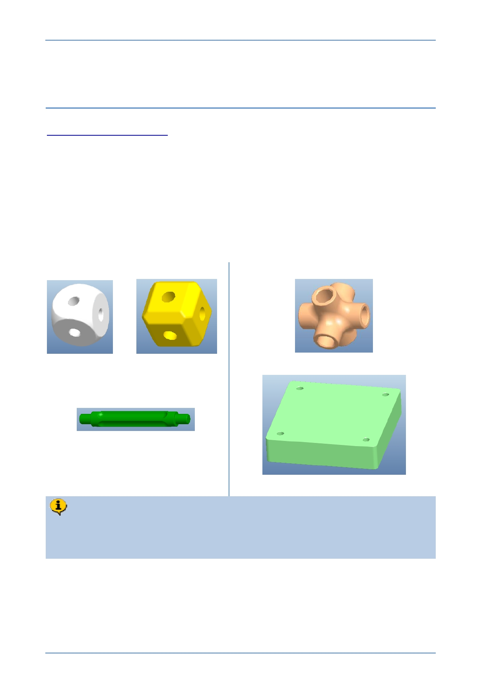

PTC Academic Program
Module 6
Extension task
Teachers around the world can get a school license for Creo Parametric online at
Creating new components for the kit is a great way to practice your new skills with Creo
Parametric. Below are some suggestions but you will probably have ideas of your own.
Another great way to learn Creo Parametric is to model everyday objects.
Just like learning a new language or playing a musical instrument, practice is the key to
becoming proficient!
We hope you enjoy using Creo Parametric.
Modified components
New components
Teachers in the following regions are able to access face to face training and
expected to complete a modeling task before they are issued with a school
license for Creo Parametric.
© 2012 PTC
Creo Parametric 2.0 Primer
Page 101